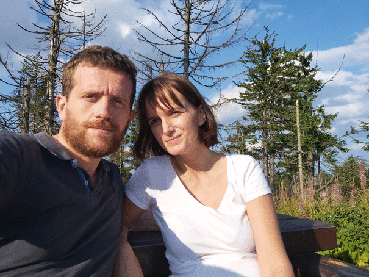

Ślub Izy i Kacpra
Serdecznie zapraszamy na świętowanie naszej rozmyślnie utraconej wolności!
Czas i Miejsce
Nasz wielki dzień zaplanowaliśmy na 20 sierpnia 2021 roku, a nasze wybrane miejsce ceremonii to Willa Baszta znajdująca się przy ulicy Jodłowej 13a w krakowskiej dzielnicy Przegorzały (kliknij tutaj żeby zobaczyć mapę).

Plan imprezy
Ceremonia odbędzie się o godzinie 16.00, ale my będziemy z radością i niecierpliwością czekać na Was na miejscu od 15.30 żeby mieć okazję z wszystkimi się przywitać. Po złożeniu przysięgi będzie czas na lampkę szampana, życzenia i kilka zdjęć na tarasie Baszty, po czym przejdziemy do restauracji na uroczystą kolację.
Potwierdzenie
Uprzejmie prosimy o potwierdzenie przybycia na uroczystość do 20 czerwca.
Nocleg
Dla wszystkich gości spoza Krakowa dostępne będą pokoje w Hotelu Wolskim, który znajduje się nieopodal Baszty. Rezerwacji możecie dokonać za pośrednictwem strony hotelu (link) lub możecie się odezwać do nas i my się tym zajmiemy.
Kontakt
- Iza: (+48) 783 480 086
- Kacper: (+48) 728 364 517
Dodatkowe informacje

Nasze plany na przyszłość …

… i żyli długo i szczęśliwie.